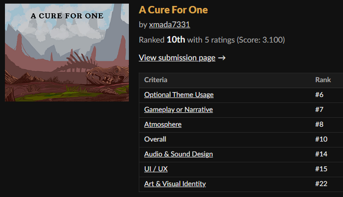
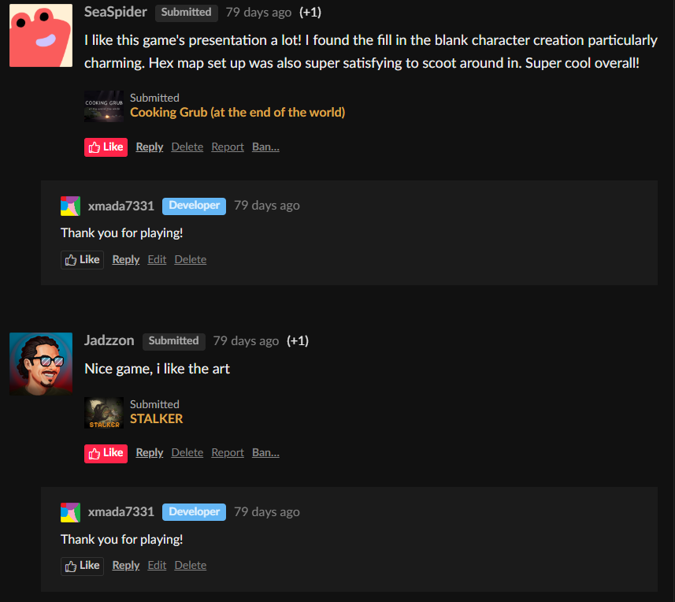
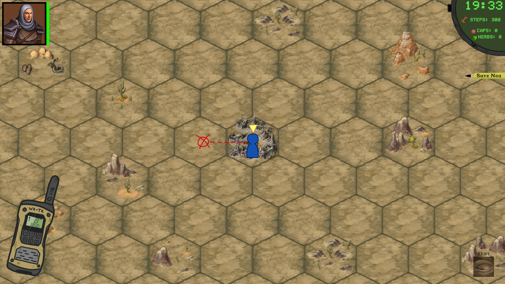

For the Wasteland JAM I decided to raise the bar a little bit when it came to making this game. The jam lasted for about 10 days- or this was how much I had [again- more or less].
The first day I spent on thinking about all the possibilities, as always. The optional theme Radio Communications came in handy in terms of narrowing down the main idea for the game. I started browsing and looking through the assets on my drive and I somewhat had an idea in mind...
The game would be a turn-based survival/ exploring game. I had beautiful hexagon tiles already premade, as well as assets to go with them. I started making grids and mapping things out in Unity. This was also the time where I started to think about the story.
Story aside for now, one of my greatest inspirations for this project was the OG Fallout. I liked the wasteland it presented, the turn based system and the funny narration. That's when I decided I also wanted to add some RPG elements to the game.
It was still pretty early in development, but I knew the main aspects of what the game should be- a straightforward and simple exploration game with a step/ time limit with RPG elements, so players can experiment with 'builds'. The RPG elements I had in mind would affect how the player chooses to play.
You see, every time the player moves on the map it takes away their 'steps' resource, so they have to manage it well. When the player moves on a new tile there is a chance for event. The game has three kinds of events: enemy encounter, skill check event and loot. If you leveled strength, you'd be happy to see enemy encounter as often as possible, because your character would deal more damage.
If you leaned more into charisma build, skill check events and village dialogues shouldn't be a problem for you. Loot event is neutral and automatic- it gives the player X amount of the currency, and the amount is boosted by character's certain stat. The currency is tied to the story, so we'll talk about it later.
The map had different biomes and each biome would offer different kind of events. For example, south part of the map has a broken car and a unique event in the area. The player starts with 300 steps and each interaction would take some amount from it. These actions include: moving to a new tile, triggering an event, how many turns the battle lasted. If the steps count reaches 0, it's game over.
The player has 100 health points and during the battle can get injured. While on the map, the player can click on 'rest' button to spend some steps in order to heal themselves. If the player needs a quick tip or needs some help he can use the walkie talkie- and that's where the optional theme comes in play.
The story for the game is pretty simple: you and your partner Noa live in a shelter in a remote place in the middle of a wasteland. You find out that she's sick and needs a special medication so she can live. The time is running out, so you grab what you can and step into the wild. The way to successfully finish the game is to find the cure and deliver it back home safely. There is more than one way to get the medication, but I won't spoil it. I can say that one of the methods is to loot as much resources as possible.
And it's Noa who speaks through the walkie-talkie with the player and gives him tips and tricks.
When I had all the pieces put together I started polishing them all and ended up with a very solid game. From systems such as character creation and dialogue window straight out of the Ren'Py engine, to turn based attack with info logs and multiple different endings, this might have been my most advanced game to date (or tied with MTX Sim). I am very proud of it and happy that other players have enjoyed it so much, that it had taken 10th place in the jam.
Obviously there were certain things that would benefit from more polish, but if I were to polish every single thing in need of that, I would probably need another 10 more days.


